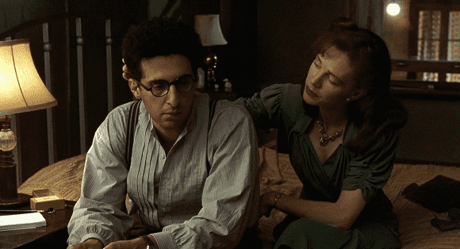

< < < Back
3 Reasons Why You Should Not Date Older Women – Return Of Kings
For the past decade, the mainstream media has been pushing older women (defined here as 35 and up) as “the new sexy,” to the point where it’s become cultural white noise. Not a week goes by without a listicle or stinkpiece extolling the virtues of older women, whether they’re trying to shame thirty- and forty-something men into dating women “their own age” or selling younger men on “cougars,” those mythological maneaters that don’t exist outside of MILF porn. And each article cites the same reasons why these women are hot:
- “They’re confident.”
- “They pay their own way.”
- “They know what they want.”
By sheer accident, I’ve spent a good portion of the past few years involved with women in their late thirties/early forties. If you’re in your twenties, getting entangled with a woman more than a decade older than you is a disastrous move. While they can be fun in the sack (as my friend the Bechtloff is fond of stating), trying to forge a deeper relationship with one will end in misery for you.
While it’s tempting to point out the obvious (“LOL old women have wrinkles and their boobies sag!”), the girls I talk about in this article were in shape and cute for their age; their problems go far beyond gravity and aging. Here’s why getting involved with women 35 and up is a bad idea…
1. They’re mentally ill

Despite the twin specters of cultural Marxism and technology-induced social retardation ruining Western society, most girls still manage to pair up by their early thirties. Given how severely the modern sexual marketplace favors women, any girl who isn’t married or in a long-term relationship (7+ years) by the time she’s 40 is damaged goods. Her mental issues are so deep and intractable that even with an international epidemic of male thirst, she can’t get any man to take a sip. Given that women are generally more enthusiastic about marriage and relationships than men, a girl who can’t achieve either is irreversibly broken.
For example, a long time ago, I was involved with a girl in her late thirties I’ll refer to as J. A fan of my work, she invited me to meet her and her boyfriend one day when I was passing through their area. After taking me out drinking, she forced herself on me while “the love of [her] life” was sleeping ten feet away, then when I confronted her about it months later, she confessed to having a “crush” on me and claimed she had blacked out that night. After J.’s boyfriend dumped her for a woman in her twenties, she began smearing him online as a “pedophile,” leaving out the fact that she’d repeatedly cheated on him with a man in his twenties (me).
In addition to her infidelity, J. was a severe alcoholic: near the end of our relationship, she was relapsing at the rate of once a month. Whenever she was starved for attention, she would go on multi-day benders in which she refused to shave, shower or eat, demanding I drop everything and come over to make sure she was alright. During one episode, she begged me to come over with “a 24-pack of beer” and “some thick fuckin’ condoms,” berating me at the door for not bringing another girl so we could have a threesome. Another time, she got so drunk that she forgot she was on her period and ended up menstruating all over her bedsheets.
2. They’re incredibly insecure

Let’s just explode this lie right here, right now. The you-go-grrl fantasy of “cougars” who chase younger men and don’t care what anyone thinks of them is just that: a fantasy. Most single women over 35 are miserable wretches who want nothing more than a husband and kids, constantly screwing up due to their mental disorders and poor life choices. Their loneliness and personality defects make them ludicrously easy to manipulate, to the point where men in third-world countries can make a living fleecing them.
Moreover, while feminists may deny that women become less attractive as they age, deep down, every girl knows the truth. As a man in your twenties, you have more (and better) options than any woman over 35, and she knows this. Contrary to Benjamin Franklin’s claim that old women are “grateful” for attention from young men, any older woman you bang will eventually grow to resent you for dating down. It’s the same reason why fat girls are meaner than skinny girls; they know they’re ugly and assume that men who pursue them are doing so out of pity.
For example, a while back, I met a single mother reader of mine in Pittsburgh I’ll refer to as W. She was nearing 40 and had a pretty face and decent body, though she could stand to lose 20 pounds. While she was incredibly grabby at the bar—constantly touching me on the arm and rubbing my shoulders—when she took me back to her place, she screamed when I tried to turn the lights on in her bedroom. Turns out she needed the darkness to hide her stretch marks, which were so bad they made her stomach look like it had been carved up with a panga.
In another incident, J. went ballistic on me when I tried to wheedle a nude selfie out of her, claiming she was “revolting” naked because of her flat chest and “horrifying” face, accusing me of trying to entrap her in a legal scheme. Another time, she invited me over to her place to do cocaine, and an hour after I got there, she was simultaneously begging me to have sex with her (a running theme in our relationship) while claiming I needed to stay away from her because she was too old, ugly and crazy for me, exclaiming, “You can do so much better than me.”
3. They’re immature
I forgot who it was that said “women don’t grow up, they just grow old,” but it’s the absolute truth. As young men, we’re inclined to think that our elders are wiser than us, having learned from the trials and tribulations life has put them through. The truth is that few women mentally mature past high school. If you become involved with an older women, she’ll act just as childishly as girls your age, only she’s not as good-looking as girls your age… making her behavior inexcusable.
While female immaturity is in part enabled by white knights and thirsty simps, a significant part of it is physiological. In his essay “On Women,” Arthur Schopenhauer pointed out that women reach the peak of their maturity at age 18. My friend Davis Aurini has pointed out that girls don’t reach full maturity until they give birth; women who don’t have children will remain children themselves no matter how old they get. It’s no surprise that men who have the option to date younger girls almost always do so: they’re just as mature as women their own age, but they’re hotter naked.
A couple of months back, I scored an OkCupid date with a 37-year old girl I’ll call T. She was part Argentine, stood about six feet tall, worked as a librarian and exuded a sexual desperation endemic to single women of a certain age. After we got liquored up at a bar near my apartment, I brought her back to my place to seal the deal. As we were making out on my bed, she suddenly pushed me off her.
“What is that?” she cried.
“What’s what?” I had no clue what she was talking about.
T. jumped off the bed and stormed over to my coffee table, snatching up the “Trump: Make America Great Again” sign I’d stashed on top of a pile with all the other tchotchkes I’d scored while on the campaign trail.
“Did you actually vote for Donald Trump?” she interrogated me, a vein rising in her forehead.
“Yeah,” I said nonchalantly.
“Omigod, omigod, what is wrong with you?” she hollered. “He’s a fucking racist!”
“He is not a racist,” I argued, too drunk to come up with better retorts.
The argument degenerated from there, as T. hyperventilated about my hidden bigotry and I tried to reassure her that no, I don’t moonlight as a KKK Grand Wizard. At one point, she actually screamed, “OH MY GOD, I ALMOST FUCKED A WHITE SUPREMACIST!” After about ten minutes of pointless back and forth, she put her coat back on and stormed out. I suppose I should be glad that she didn’t Google my name.
J. is another fine example of female immaturity: she’s incapable of accepting any responsibility for her actions. When I confronted her for seducing me and cheating on her boyfriend, she tried to excuse her unfaithfulness by claiming that he refused to have sex with her. She also had the audacity to claim that I “ruined [her] life” by confronting her, saying that she was “traumatiz[ed]” by me being angry at her using me for her own gratification.
While women over 35 do have some things to recommend them—namely, they tend to be easy to lay, good in bed, and are eager to please you in the hopes that you’ll stick around—committing to one is a bad idea. While it’s possible for people to change, by the time someone hits their thirties, their personality is pretty much set in stone. Any woman who is perpetually single past a certain age is bad news for any man who tries to court her.
Read More: Why It’s Good To Date Both Older And Younger Women